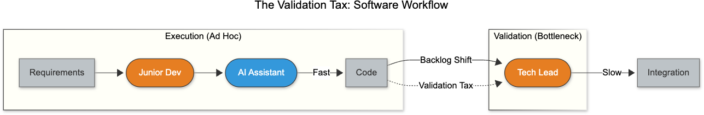
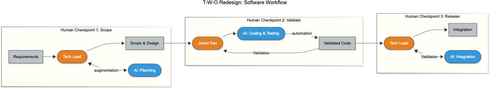

Organization
Roles, incentives, accountability, and governance determine whether workflow redesign can stick.
An idea platform on AI, work, and organizations
AI changes tasks. Workflows need owners.
Exploring how work evolves in the age of AI.
Central idea
AI improves tasks. Organizations run on workflows. Transformation happens when those workflows are redesigned with clear ownership.
The missing middle
Leaders often speak at the organization level while teams experiment at the task level. What is missing is the workflow that connects the two.
Without workflow redesign, task gains stay local. With it, they can compound into organizational change.
T-W-O framework
T-W-O explains AI transformation across three layers: tasks, workflows, and the organizations that own them.

Roles, incentives, accountability, and governance determine whether workflow redesign can stick.
Workflows are the missing middle where task-level gains either compound or stall.
Tasks are the atomic units of work. Each one raises a simple question: human, AI, or external provider?
Key ideas
Knowledge work shifts from pure production toward evaluation, steering, and refinement.
Automation adds hidden overhead when output must still be checked, corrected, and coordinated.
Organizations change more effectively one workflow at a time than through wholesale reinvention.
Validation tax
Many AI deployments underperform because they add a hidden second layer of effort: verification.
Without workflow redesign, that burden can exceed the gains from automation.

Featured book
A Business Novel about Work in the AI Era
A novel about a familiar mistake: treating AI as a technology initiative when the real challenge is ownership and workflow change.
Explore the BookApplications
The framework becomes useful when applied to concrete operating systems such as software delivery, support, and document-heavy review.

Feature delivery can be reorganized around AI capability blocks, review checkpoints, and clearer release ownership.
Escalation paths, quality assurance, and resolution ownership all change when AI handles more of the first pass.
Legal review, compliance, and analysis become clearer when machine processing is paired with explicit human judgment.
Project areas
The Owner is the narrative expression of the framework.
Essays and position work on the missing middle, capability reallocation, and AI transformation.
Talks on workflows, validation burden, and redesigning work incrementally.